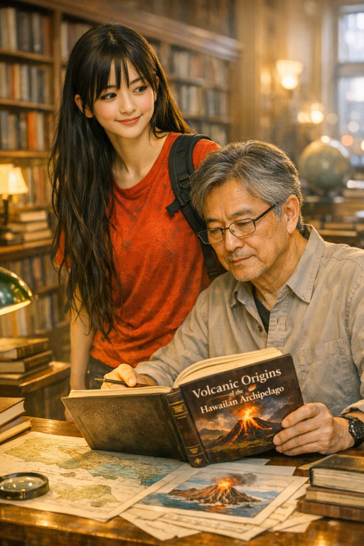

|
 |
Patrica quietly pushed open the heavy wooden doors of the city library just as the afternoon rain began tapping against the windows outside. Her long black hair rested neatly over her shoulders, slightly damp from the weather. She wore a loose cream sweater, beige jeans, and bright white Nike shoes that squeaked softly against the polished floor. The library smelled of old paper and cedar shelves. Rows of books stretched endlessly beneath warm yellow lights. Patrica loved this place. It was one of the few places where the world felt slow and peaceful. She walked toward the science section, carrying a notebook pressed tightly against her chest. Earlier that week, her geography teacher had assigned a project about volcanic islands, and Patrica had chosen Hawaii. Volcanoes fascinated her — mountains that could create entire islands from fire. At the far corner of the library, she noticed someone already sitting at a wooden table beneath a green reading lamp. “Uncle Hiro?” she whispered. The man looked up from a thick hardcover book and smiled warmly. “Patrica. I thought you might come here.” Her uncle adjusted his glasses and turned the book so she could see the title: Volcanoes of the Hawaiian Islands. Bright photographs filled the pages — rivers of glowing lava, dark volcanic rock, and clouds of steam rising into the sky. Patrica pulled out the chair beside him and sat down. “You’re studying volcanoes too?” she asked. “I used to study geology when I was younger,” her uncle replied softly. “Hawaiian volcanoes are special. They grow slowly over thousands of years from lava beneath the ocean.” The green light, however, danced erratically, like a heartbeat in the shadows. It felt alive. Watching. Her mind raced. The blue passage whispered of knowledge, of ancient secrets buried beneath the earth. The green light hummed with energy, wild and unpredictable — perhaps a warning, perhaps a call. She crouched beside the extinguished torch, its smoke curling upward like a question. The cave seemed to breathe around her. |